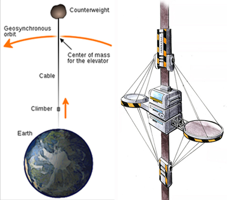
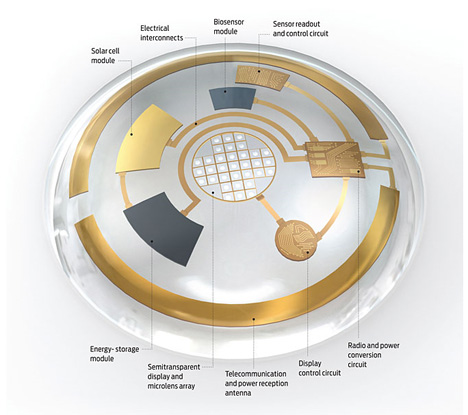

This thread is basically a list I have compiled of all the new technology, everything from augmented reality to carbon nanotubes.
Unfortunately, most of these are still in the R&D sector of corporate labs, but we could still see some of them within our lifetime.
NOTE: This area of science is very sketchy. It is entirely possible that some of these are impossible.
The reason we can see some of these within our lifetime is that medical research is advancing so fast that some people claim that, within the next forty years, scientists will be able to extend the human lifespan by more than 175 years. There are already one or two groups dedicated towards this goal, and more are on the way.
For you skeptics, it is entirely feasible. Several possible routes include gene therapy, limb/organ replacement, even uploading neural patterns into a robotic host body. (<< long way off)
There’s really no way to tell when this is going to be available. The date that seems to get thrown around most is sometime in 2050, but there’s no way to know.
The leading cause of death is disease or injury. This may not be the case for long.
Nanobots are incredibly tiny robots. To small to be seen with anything short of an electron microscope. They are, as their name suggest, robots. I’m not sure exactly how they function, but basically they can break down or manipulate molecules. This clears up cancer, diabetes, most blood diseases, heart attacks, fat, pregnancy, sexual disease…actually, pretty much any disease.
The reason is that they can be “programmed” to hunt down and destroy certain amounts of certain cells in certain areas. It’s also possible that, somewhere down the line, they will be able to alter our genetics, but that’s a long way off.
It’s also been suggested that they could manipulate cells and molecules to speed up the healing process. They could also be used to turn off pain, increase neural activity, increase concentration, intelligence, and memory, as well as being able to stimulate certain emotions. Assuming you don’t mind have trillions of tiny robots floating around in your bloodstream.
What happens if you get tasered?..
These will be available soon. They are being tested right now, and are expected to hit the market sometime next year.
Just like how episode 3 is going to be released in 2007.
Then there’s carbon nanotubes.
These are very small, conductive tubes that are stronger than anything we have right now. They are so strong that, hypothetically, were you to drop a car from a mile up onto one, it would SLICE THE CAR IN FUCKING HALF.
Yeah.
The possible applications of this are literally endless. The most obvious one is combat armor that is more or less death proof. It could be used to reinforce any given structure, making it indestructible.
It could also build the space elevator.
Yup.
You’re paying attention now, aren’t you?
For those 1 or 2 people who don’t know, the space elevator is a hypothetical…elevator…that goes into space.
The way it works is that there’s a platform/station on earth, usually proposed to be on a boat. On this platform there would be several entwined cables. Attached to those cables is a gigantic elevator, that either connects to the moon or to another platform that just sits there in orbit.
That’s a very basic summary, and I don’t really get the technicals, but there you go. I also have 2 images:

Carbon nanotubes are also supposed to make the smallest and most powerful computers to date, but I really don’t know how.
There’s one or two products with carbon nanotubes out already. They are being very rapidly developed, so expect to see more soon.
To change the subject, one company says they are going to have VR by 2014. 'Nuff said.
There’s also exoskeletons. That term is used broadly, but in essence it means a semi-automated, full-body, mechanical device that assists/augments the human body.
There are more than enough examples of this in sci-fi. One is the lifter from aliens. Another is the H.E.V. suit. Yet another would be the nanosuit.
There are several of these in development.
My favorite is still in the design phase, but it can lift 220 pounds indefinitely.
It is worn by the user, and is connected in such a way that it simply mirror’s the users movements.
I know there are several others in development, but I can only recall the specifics of one other.
It is done by a Japanese company. It is still in the R&D phase, but it is significantly further along than the other ones. In fact, there was a video showing one of the workers using it to carry another worker across the office. I do not know how much this one can lift.
This is where it gets weird.
The company very stupidly got a website called skynet. I do not remember the rest of it-- it was something/something/.eu/es or something like that-- but for a company making robotic exoskeletons, that’s pretty ominous.
Then there’s the fact that the exoskeleton was made out of a smooth, white, chitinous casing with glowing blue centers. I shit you not. For those who don’t get it, this pic is the thing that it looks like most:
If any knows the site, please post it.
This technology can be expected within the next 10 years.
Next is cars. I’m not going to write much on this, as it depresses me, but here’s the basics:
First, the manufacturers have decreed that priuses/hybrids/“green” cars are too quite. Supposedly, quite enough to be a menace.
The logical solution here would be to install louder horns, or, better yet, expect people to slow down when they are about to run someone over.
That’s the LOGICAL solution.
The manufacturer’s solution is to allow people to upload MP3’s in place of horns. This seems like a good idea, until you realize that
A: Other people have different tastes in music, and
B: They are going to be blowing their horns for the hell of it.
This means that in the middle of a traffic jam it’s going to be a regular lady gaga festival, leading to road rage, manslaughter, and general insanity.
It also means that you have no idea if someone’s actually about to run you over, or if they’re just being a douche.
The only plausible upshot is tailgating someone with the jaws theme.
Also with cars, they are developing cars that are:
covered in foam,
are painted green,
relay their location to ???,
are modular?
and, bizarrely enough, drive vertically and attach themselves to the balcony of your apartment.
We also have augmented reality.
This is an age-old concept where you have contacts/glasses/implants that let you see an “enhanced” version of reality. To explain, here are 2 pictures:

^^does not exist yet^^

^^exists^^
Yes, ladies and gentlemen, this technology is here. Now. It’s still in it’s infancy, but it’s here.
But only as iphone apps.
Yes, you can have it, but you will be perpetually holding up your Iphone in front of you, squinting at the readout.
Here are some links, if you want them:
https://mashable.com/2009/12/05/augmented-reality-iphone/
https://layar.com/
For those who still don’t get it, augmented reality is the pinnacle of the information age. You glance at someone, and you immediately get their name, facebook page, twitter feed, phone number, DOB, Educational/sexual/criminal history…the list is endless.
You can also get directions to a location, link up with satellites, project images or webpages onto blank walls or really any surface.
If you are in the military, you can receive silent commands, get enemy locations, see what the enemy is wielding, where it’s pointing the gun, where your squad is…again, the possibilities are endless.
“But BMSMG,” you ask, “How could we use this when we’re holding the Iphone up to our face all the time?”
Here’s how:


It’s called bionic vision, and it is the most awesome thing in all of recent frakking history.
It is, in short, a monitor that overlays your vision. Anything you could display on a computer monitor is RIGHT IN FRONT OF YOU.
That, my friends, is how we will use augmented vision.
Now we also have another species to share augmented vision with!
Say hello to Jules.
https://www.youtube.com/watch?v=kThr6CMLrvg
https://www.youtube.com/watch?v=RNKLuXUh3M4
https://www.youtube.com/watch?v=vArdTJfTOzo
https://www.youtube.com/watch?v=ysU56JzBjTY
https://www.youtube.com/watch?v=elVdiboCa80
Jules is a conversational robot with facial recognition systems and lots of memory. He uses that memory to recall how people acted towards him in previous conversations, and then re-acts accordingly. In the words of his maker:
“Be nice to jules or he may not treat you well”
We have a word for that. You know what it is?
VENGEANCE.:fffuuu:
So if you see him, be nice.
Also it appears that we are soon going to be battling large, mechanical spiders just for the hell of it.
https://www.lamachine.co.uk/index.php
You don’t actually battle these, and there’s nothing excitingly futuristic about this tech, but my steampunk obsessed mind would go crazy if I didn’t post this.
Now that you have all these technology’s buzzing throughout your head, read this article:
https://en.wikipedia.org/wiki/Technological_singularity
Also, here are some links for the extended life tech:
https://www.extended-eternallife.org/frame.html
https://www.wired.com/wired/archive/8.01/forever.html
https://www.nytimes.com/library/magazine/home/20000130mag-hall6.html
Images taken from /gajitz.com /portal wiki /thegamereviews.com /wikipedia
If you want to know more about any of this, just ask me, or, better yet, just freaking google it.


{kind=link}